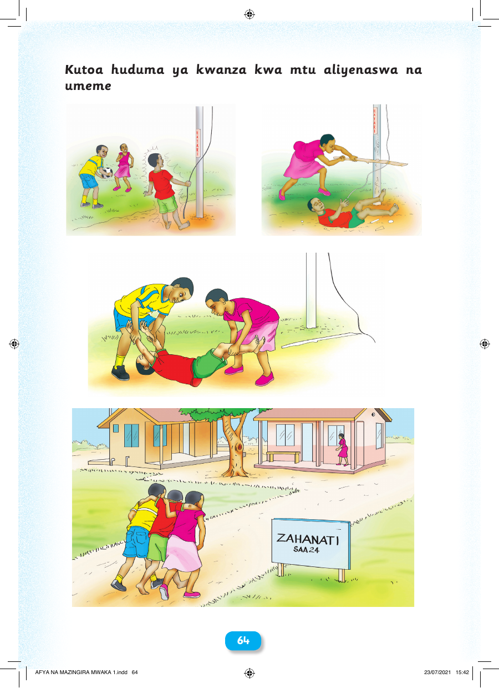

 64 Kutoa huduma ya kwanza kwa mtu aliyenaswa na umeme AFYA NA MAZINGIRA MWAKA 1.indd 64 23/07/2021 15:42 Kutoa huduma ya kwanza kwa mtu aliyenaswa na umeme 64 AFYA NA MAZINGIRA MWAKA 1.indd 64 23/07/2021 15:42